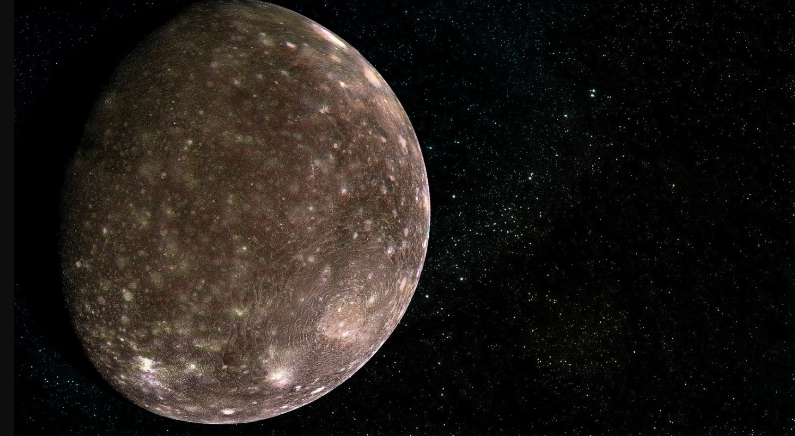

Callisto — The Ancient Moon
Callisto is one of Jupiter`s four largest moons and is known for its heavily cratered surface. It is one of the oldest objects in the solar system, with very little geological activity.
Unlike Io and Europa, Callisto does not experience strong tidal heating, so its surface has remained mostly unchanged for billions of years. This makes it a valuable object for studying the early history of the solar system.

Why Callisto Is Important
Callisto is important because it provides a record of ancient impacts. Its surface is covered with craters of different sizes, showing how frequently objects collided in the early solar system.
Scientists also believe that Callisto may have a subsurface ocean beneath its icy crust, although it is less likely to support life compared to Europa.
Facts About Callisto
- Callisto is one of Jupiter`s Galilean moons.
- It has the most heavily cratered surface in the solar system.
- It shows very little geological activity.
- Callisto is made of rock and ice.
- It orbits Jupiter in about 17 Earth days.
- It is one of the oldest known surfaces in the solar system.
Callisto Data
- Diameter: 4,821 km
- Distance from Jupiter: About 1,883,000 km
- Orbit Time: About 17 Earth days
- Surface: Ice and rock
- Main Feature: Heavily cratered surface
- Discovery: Galileo Galilei (1610)